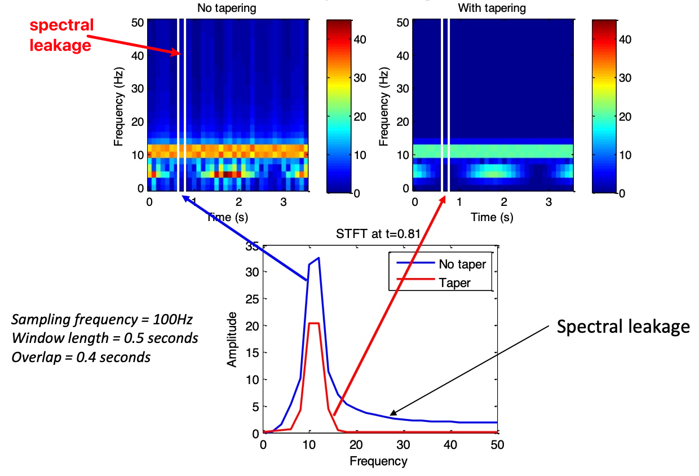
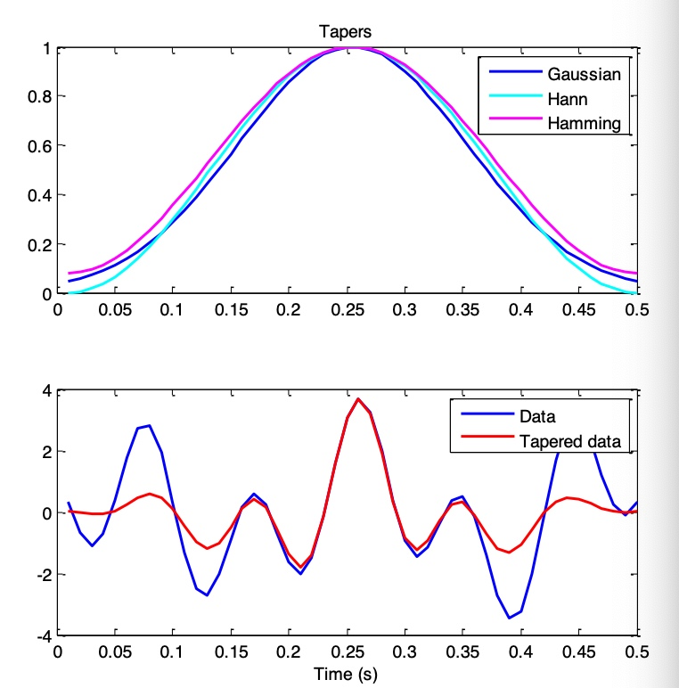

BME | EEG Analysis - Fourier Transform
Fourier Transform
Mathematical Definitions
Discrete Fourier Transform (DFT) Definition:
Continuous Fourier Transform (CFT) Definition:
Discrete Inverse Fourier Transform (IDFT) Definition:
Continuous Inverse Fourier Transform (CIFT) Definition:
Explanation and Understanding
The purpose of the Fourier Transform is to decompose a signal into its frequency components.
This is achieved by constructing a series of sinusoidal waves with different frequencies and performing dot products with the original signal.
Signals are transformed from the time-domain to the frequency-domain through the Fourier Transform and can be transformed back to the time-domain through the Inverse Fourier Transform.
Q: Why do we use the complex form of signals?
When sinusoidal waves with similar frequencies and phase are multiplied, the result’s amplitude is maximal. However, if the waves have the same frequency but a phase difference of , the direct product results in 0.
To avoid this, signals are transformed into complex numbers, comprising real and imaginary parts. Multiplying a complex signal by a sinusoidal wave of a certain frequency ensures that the result is not affected by the phase difference.
Using Euler’s Formula, we represent complex sinusoidal waves as vectors:
Where A represents amplitude (length of the vector) and f represents the rotating frequency.
Sinusoidal Wave Frequencies Selection:
As per the Nyquist theorem, the maximum frequency we can measure is half of the sampling frequency.
Hence, for a Discrete Fourier Transform result’s length of N, we need N different frequencies of sinusoidal waves to completely extract the signal.
If the signal has only a real part, we need different frequencies of sinusoidal waves to extract the signal.
Code
fft｜Fast Fourier Transform
The fft significantly reduces the time required for Fourier Transform.
MATLAB Code
1 | % FFT Usage |
1 | % Adding NFFT (FFT Length) |
1 | % IFFT Usage |
Python Code
1 | dataFFT = np.fft.fft(data) # Perform FFT on data |
Exercise
Problem Statement:
Manually create a Discrete Fourier Transform (DFT). Signal X has a length of N and a sampling frequency (fs) of fs.
Hints:
- Extract (N/2)+1 independent frequencies, with the maximum value being fs/2.
- Euler’s Formula:
Available functions: exp(t), a+bi, linspace()
1 | N = 1000; % Length of signal |
1 | import numpy as np |
Short-time Fourier Transform | STFT
Due to the limitations of the Fourier Transform in handling unstable signals (unstationary signals), we employ the Short-time Fourier Transform. Reducing the window length can improve spatial resolution, but if it’s too small, it may result in poor frequency resolution.
Q: What can be done if there are edge artifacts or spectral leakage?
If the signal exhibits edge artifacts or spectral leakage, we use tapering to modulate the signal. Common tapering methods include using the Hann window, Hamming window, or Gaussian window. Generally, the Hann window can alleviate edge effects.


Q: How should the parameters be set?
Time segment length: It’s usually preferable to have segments that can encompass 2-3 cycles. Longer segments → higher frequency resolution; shorter segments → higher time resolution.
Overlap: Typically set to 50%-90%.
Appendix:
Understanding Fourier Transform: https://zhuanlan.zhihu.com/p/19759362
Note: The content in this blog is class notes shared for educational purposes only. Some images and content are sourced from textbooks, teacher materials, and the internet. If there is any infringement, please contact aursus.blog@gmail.com for removal.